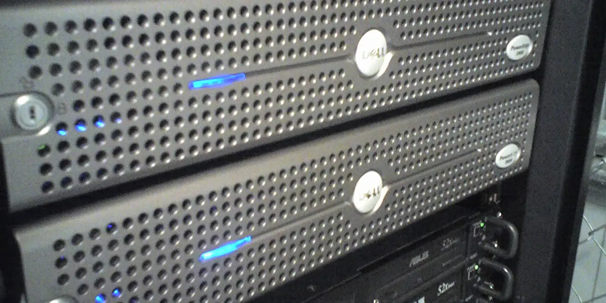

STOCK_update.md의 우선순위표에서 이미 최근에 다룬 상위 종목을 제외하면, 델테크놀로지는 가장 먼저 다시 볼 만한 종목입니다. 이유는 단순합니다. 델은 더 이상 PC 교체 사이클만 보는 회사가 아닙니다. 2026년 5월 발표된 회계연도 2027년 1분기 실적에서 AI 서버 매출이 폭발했고, 회사는 연간 AI 서버 매출 전망을 크게 올렸습니다. 다만 주주가 봐야 할 핵심은 “AI 서버를 많이 팔았다”가 아니라 “그 매출이 얼마나 이익과 현금으로 남는가”입니다.
델테크놀로지의 FY2027 1분기 발표는 겉으로 보면 매우 강합니다. 매출은 438억 달러로 전년 대비 88% 증가했고, 영업이익은 36억6,000만 달러, 순이익은 34억4,000만 달러, 영업현금흐름은 40억8,000만 달러였습니다. 회사는 244억 달러의 AI 주문을 받았고, AI 최적화 서버 매출 161억 달러를 인식했다고 밝혔습니다. 이 정도 숫자면 시장이 델을 다시 평가하는 것은 자연스럽습니다.
하지만 높은 거래대금과 강한 실적 발표 이후에는 질문이 더 까다로워집니다. AI 서버는 엔비디아 GPU, 고속 네트워킹, 메모리, 전력·냉각 부품이 많이 들어가는 사업입니다. 매출 규모는 커질 수 있지만 부품 비용도 같이 커집니다. 델이 진짜로 좋은 주식이 되려면 주문과 매출이 아니라 ISG 마진, 운전자본, 현금 전환, 고객 집중도를 함께 증명해야 합니다.
AI 서버 매출은 크지만 마진은 따로 봐야 합니다

델의 Infrastructure Solutions Group은 이번 분기 매출 290억 달러를 기록했습니다. 전년 대비 181% 증가한 수치입니다. 그 안에서 AI 최적화 서버 매출은 161억 달러로 전년 대비 757% 늘었고, 전통 서버와 네트워킹 매출도 85억 달러로 92% 증가했습니다. 숫자만 보면 하드웨어 업체가 AI 인프라 수요를 가장 직접적으로 흡수하고 있습니다.
그런데 AI 서버 사업은 매출이 커질수록 투자자가 더 꼼꼼히 봐야 합니다. 델은 시스템을 조립하고 설계하고 공급망을 맞추는 능력이 강하지만, 고가 부품의 상당 부분은 외부 공급망에서 옵니다. 엔비디아 GPU와 고속 네트워킹, HBM과 SSD, 전력·냉각 부품이 많이 들어가면 고객에게 청구하는 매출은 커져도 델이 가져가는 부가가치율은 제품 구성에 따라 달라질 수 있습니다. 그래서 AI 서버 매출 성장률만 보고 마진 개선을 자동으로 기대하면 위험합니다.
이번 분기 ISG 영업이익은 31억 달러로 전년 대비 206% 증가했습니다. 이 부분은 분명 긍정적입니다. 하지만 다음 분기부터는 AI 서버 매출이 계속 커지는 가운데 영업이익률이 유지되는지, 아니면 대형 고객 가격 협상과 부품 비용 때문에 희석되는지 확인해야 합니다. 주주에게 중요한 숫자는 매출 총액보다 “AI 서버 1달러가 어느 정도 이익으로 남는가”입니다.
백로그는 주문장이 아니라 작업 대기열입니다
관련 영상
델테크놀로지 AI 서버 주문과 백로그를 설명하는 한국어 롱폼 영상
델은 전년도 말에 AI 최적화 서버 주문과 출하, 백로그를 강하게 제시했고, 이번 분기에도 244억 달러 AI 주문과 161억 달러 AI 서버 매출을 공개했습니다. 이 숫자는 델이 AI 인프라 지출의 핵심 수혜자라는 근거입니다. 하지만 백로그는 주문장이 아니라 작업 대기열입니다. 부품을 확보하고, 고객 데이터센터 일정에 맞춰 출하하고, 설치와 검수를 거쳐야 실적에 반영됩니다.
투자자가 봐야 할 것은 백로그 규모보다 전환 품질입니다. 대형 고객 한두 곳의 주문이 크면 매출은 크게 뛰지만 고객 집중 리스크도 커집니다. 반대로 여러 기업, 네오클라우드, 통신사, 정부·공공 고객으로 주문이 퍼지면 델의 AI 서버 사업은 더 안정적으로 보일 수 있습니다. 공식 발표의 숫자만으로는 고객 분산도를 완전히 알기 어렵기 때문에, 다음 컨퍼런스콜과 공시에서 고객 구성이 얼마나 넓어지는지 확인해야 합니다.
백로그가 매출로 바뀌는 과정에서는 운전자본도 중요합니다. AI 서버는 고가 부품을 먼저 확보해야 하고, 고객 대금 회수 시점과 재고 부담이 엇갈릴 수 있습니다. 이번 분기 영업현금흐름 40억8,000만 달러는 매우 강한 숫자입니다. 다만 AI 서버 사업이 더 커질수록 재고, 미수금, 선급금 흐름이 실적 변동성을 만들 수 있으므로 현금흐름이 매출 성장과 함께 유지되는지를 봐야 합니다.
PC 사업은 사라진 사업이 아닙니다
AI 서버가 모든 관심을 가져갔지만, 델의 Client Solutions Group도 이번 분기에 의미 있는 숫자를 냈습니다. CSG 매출은 146억 달러로 전년 대비 17% 증가했고, 상업용 클라이언트 매출은 130억 달러로 18% 늘었습니다. 소비자 매출도 16억 달러로 9% 증가했습니다. 델이 AI 서버 회사로 재평가받는 중이지만, 기업용 PC 교체와 워크스테이션 수요는 여전히 이 회사의 중요한 현금 창출 기반입니다.
PC 사업이 중요한 이유는 AI 서버 사업의 변동성을 완충하기 때문입니다. 데이터센터 주문은 몇 개 분기에 크게 몰릴 수 있고, GPU 공급이나 고객 투자 속도에 따라 흔들릴 수 있습니다. 반면 기업용 PC와 워크스테이션은 교체 주기와 보안 정책, 운영체제 전환, 원격 근무 인프라에 따라 반복적으로 움직입니다. AI 서버가 델의 성장 엔진이라면, 상업용 클라이언트는 회사가 흔들릴 때 버티는 바닥입니다.
다만 PC 사업도 무조건 안정적이라고 보기는 어렵습니다. 기업 고객이 장비 교체를 늦추거나, Windows 전환 수요가 예상보다 약하거나, 가격 경쟁이 심해지면 마진은 흔들릴 수 있습니다. 주주는 AI 서버 성장만 보지 말고 CSG 영업이익이 같이 버티는지 확인해야 합니다. 델의 좋은 시나리오는 서버만 커지는 것이 아니라, 서버와 PC가 동시에 현금을 만드는 구조입니다.
델 주주가 다음 실적에서 확인할 순서
첫 번째는 FY2027 AI 서버 매출 전망입니다. 회사는 연간 AI 최적화 서버 매출을 약 600억 달러로 예상한다고 밝혔습니다. 이 전망이 유지되는지, 더 올라가는지, 또는 부품 공급과 고객 일정 때문에 조정되는지가 가장 큰 주가 변수입니다. 두 번째는 ISG 영업이익률입니다. AI 서버 매출이 늘어도 마진이 유지되지 않으면 시장은 델을 단순 조립 매출 회사로 낮춰 볼 수 있습니다.
세 번째는 현금흐름입니다. 이번 분기 영업현금흐름 40억8,000만 달러와 주주환원 21억 달러는 주주에게 강한 신호입니다. 하지만 고성장 구간에서는 매출채권과 재고가 빠르게 늘 수 있습니다. 델이 AI 서버 매출을 키우면서도 현금을 계속 창출하면 밸류에이션 방어력이 생깁니다. 반대로 매출만 커지고 현금이 묶이면 주가는 주문 증가보다 운전자본 부담을 먼저 반영할 수 있습니다.
네 번째는 공급망입니다. 엔비디아 GPU, 브로드컴 계열 네트워킹·ASIC 생태계, 삼성전자와 SK하이닉스 같은 메모리 공급망은 델의 AI 서버 납품 속도에 직접 영향을 줍니다. 델은 고객 접점과 통합 역량이 강하지만, 핵심 부품 공급의 병목을 완전히 혼자 통제할 수는 없습니다. 그래서 관련종목을 함께 볼 때도 델의 매출만이 아니라 GPU, 네트워크, 메모리 가격과 공급 상황을 같이 봐야 합니다.
델테크놀로지는 AI 인프라 투자 사이클에서 가장 현실적인 매출을 보여주는 회사 중 하나입니다. 그러나 현실적인 매출이 곧 높은 주주 수익률을 보장하지는 않습니다. 지금 주주에게 필요한 것은 AI 서버 매출 161억 달러에 놀라는 것보다, 주문이 백로그로 쌓이고, 백로그가 매출로 바뀌고, 그 매출이 ISG 마진과 현금흐름으로 남는지를 순서대로 확인하는 일입니다. 이 세 단계가 동시에 맞아떨어질 때 델은 PC 회사의 재평가가 아니라 AI 인프라 운영사로 더 높은 신뢰를 받을 수 있습니다.